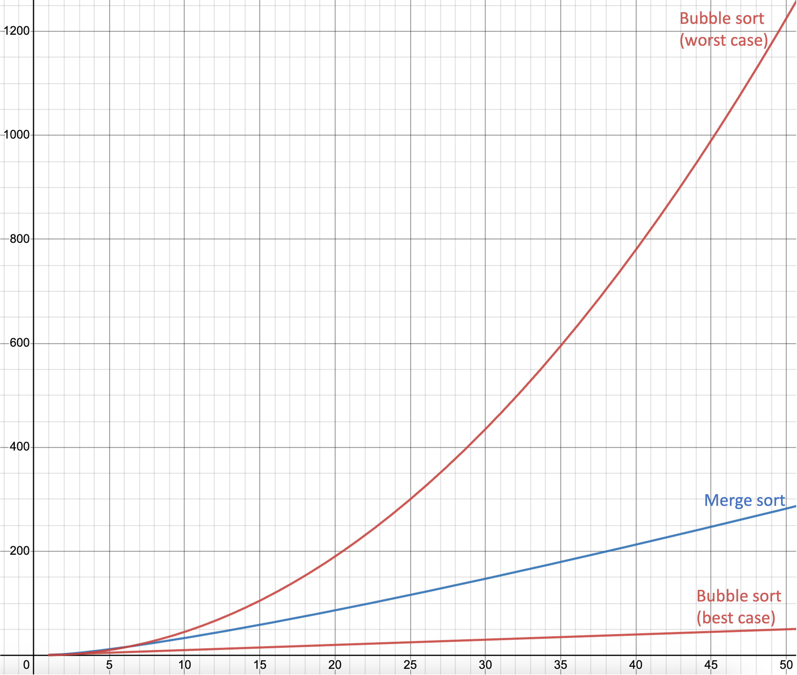

Table 1 shows the differences between bubble sort and merge sort.
 Table 1
Table 1
| Bubble Sort | Merge Sort | |
|---|---|---|
| Best case | O(n): quicker |
O(n log n): slower |
| Worst case | O(n2): slower |
O(n log n): quicker |
| Simplicity | Simpler | More complicated |
| Memory usage | Lower (better) | Higher (worse) |
Graph 1 shows the running time against the length of the list for bubble sort and merge sort (lower means more efficient).
 Graph 1
Graph 1

 Which sorting algorithm is most consistent in terms of efficiency?
Which sorting algorithm is most consistent in terms of efficiency?